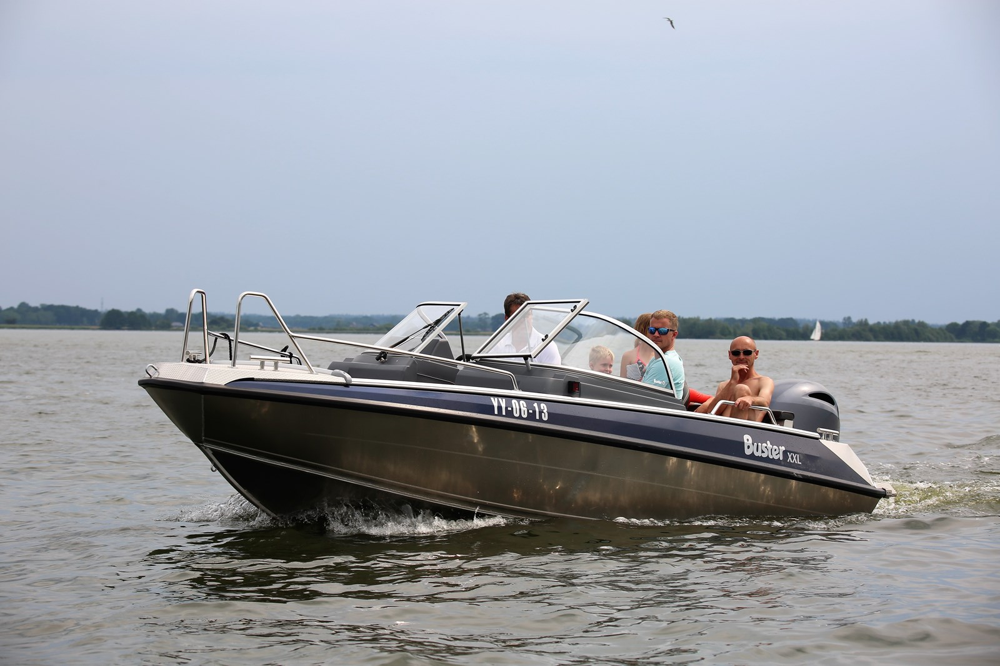

Bron: makelaar-westfriesland
Ik heb dit Keuzevak gekozen, omdat dit keuzevak handig is voor de toekomst als ik een huis ga kopen/huren.
Met de informatie die ik bij deze les mee krijg, kan ik later betere keuzes maken in het kopen of huren van een huis.
Ook snap ik de huizenmarkt later beter wat een groot voordeel levert bij het zoeken naar een huis.
Ik heb geleerd wat er allemaal komt kijken bij het huren of kopen van huis en waarom de één handiger is dan de ander.
Met deze informatie weet ik waarop ik moet letten en aan welke onderwerpen ik meer aandacht moet besteden dan de ander.
Keuzevak Vaarbewijs:
 Bron: watersport-tv
Ik heb dit Keuzevak gekozen, omdat het mij leuk lijkt om later een boot te kunnen besturen.
Zoals het vorige keuzevak is dit keuzevak ook handig voor de toekomst wanneer het van pas komt.
Bij dit keuzevak heb ik geleerd het verschil tussen een groot en klein schip en waarop je moet letten bij deze schepen.
Ook heb ik geleerd hoe het verkeer op het water gaat en hoe je veilig en voorbereid het water op kan gaan.